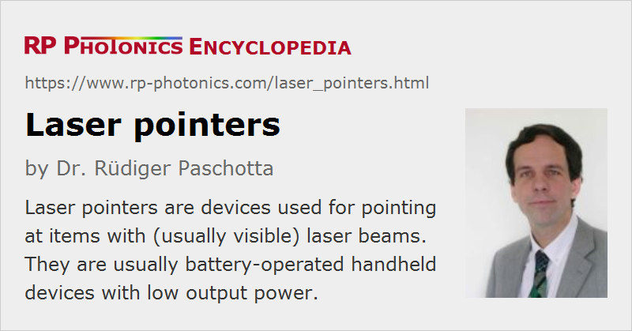

Laser Pointers
Definition: devices used for pointing at items with laser beams
German: Laserpointer
How to cite the article; suggest additional literature
Author: Dr. Rüdiger Paschotta
A laser pointer is a small (usually battery-powered) laser device designed for pointing at objects by illuminating them with a collimated visible laser beam. Most laser pointers, particularly the cheap ones, contain a small GaInP/AlGaInP laser diode operating somewhere in the red spectral region, a collimating lens, a simple electronic diode driver, and a battery compartment for e.g. three coin cells. Some significantly more expensive pointers, as shown in Figure 1, emit green or even blue or yellow light and normally contain a small diode-pumped solid-state laser with a nonlinear crystal for frequency doubling. Green laser pointers are usually based on a miniature Nd:YVO4 laser with a KTP crystal for intracavity frequency doubling. Here, Nd:YVO4 is beneficial for a low threshold pump power, and KTP works in a relatively wide temperature range, thus not requiring means for temperature stabilization.
Laser pointers should not be confused with lamps containing light-emitting diodes (LEDs), which emit a much more diffuse beam (with much lower spatial coherence, similar to that of an incandescent lamp) and can also emit light with different colors, or white light.
Applications
A typical use of a hand-held laser pointer is to point at some screen or chart during a presentation, e.g. a conference talk. This is convenient because it can be done from a large distance and requires only a small hand-held device. However, the visibility of the generated spot on the screen is often poor (particularly for red laser pointers with relatively long emission wavelength), and a fast-moving light spot can have a somewhat nervous appearance. Therefore, some people prefer an old-fashioned telescopic pointing device for presentations.
Laser pointers can be useful for, e.g., aligning some machinery, or for certain optical distance measurements.
Brightness and Color
The apparent brightness of the illuminated spot depends strongly on the wavelength of the emitted light. Most devices operate in the red spectral region, where the sensitivity of the eye rapidly decreases with increasing wavelength. Devices with 650-nm output appear about twice as bright as those emitting the same power at 670 nm, and 635-nm devices still about two times brighter. However, the shorter-wavelength laser pointers are typically more expensive. This is particularly true for green lasers, which are significantly brighter than their red counterparts, but are still expensive. They involve a diode-pumped solid-state laser and a frequency doubler. Due to the typically poor conversion efficiency of the frequency doubler at low power levels, hundreds of milliwatts of infrared (typically 1064-nm) light are required for generating a few milliwatts in the green, and the batteries will accordingly not last very long, unless they are comparatively heavy.
Range of a Laser Pointer
Lay persons often ask what is the range of a laser pointer is, and responding to this interest some producers specify some more or less questionable numbers.
If the question is meant to be how far the light of a laser pointer can propagate, the correct answer is that there is no limit, provided that the light is not absorbed or scattered away in the atmosphere. However, the beam area will eventually become larger due to the beam divergence, so that the intensity e.g. on a screen will be reduced even if the overall power remains constant. Accordingly, an airplane pilot looking down into such a beam from an altitude of 10 km will not be disturbed by the remaining small intensity.
The range of a laser pointer may also be understood as the maximum distance from which the spot on the screen can be seen. That kind of range is normally not limited by the beam divergence but by the overall optical power (apart from the wavelength and level of ambient light), since the issue is not the comparatively minor divergence on the way from the laser pointer to the screen, but rather the huge divergence of the scattered light on the way back. Therefore, someone standing next to the illuminated screen would easily see the spot when it is already hardly perceivable from the position of the laser pointer.
Safety Hazards
There have been extensive debates on laser safety issues associated with laser pointers. Typical output powers are a few milliwatts – normally below 5 mW in order to comply with safety class 3R, and sometimes below 1 mW for class 2. Direct staring into a 1-mW beam can be irritating for the eye: it can cause temporary flash blindness. However, nobody would normally do that long enough to cause serious eye damage. Nevertheless, great care should be taken, e.g. when children are playing with laser pointers, if laser pointers are at all considered to be suitable as toys. Significant hazards could arise e.g. if somebody walking down stairs or a car driver is irritated by a laser beam.
There are some reports saying that cheap green laser pointers are sold which do not have a filter to eliminate the infrared light, and therefore can emit hundreds of milliwatts in the infrared spectral region. This is obviously a terrible safety hazard; an eye directly hit by such a beam could be destroyed within a fraction of a second.
Use for Alignment
In principle, laser pointers can be used for alignment purposes. However, there are special alignment lasers which may be better suited for such applications. For example, they have a housing which can be more conveniently mounted, and the beam direction may be more stable.
Suppliers
The RP Photonics Buyer's Guide contains 21 suppliers for laser pointers. Among them:
Questions and Comments from Users
Here you can submit questions and comments. As far as they get accepted by the author, they will appear above this paragraph together with the author’s answer. The author will decide on acceptance based on certain criteria. Essentially, the issue must be of sufficiently broad interest.
Please do not enter personal data here; we would otherwise delete it soon. (See also our privacy declaration.) If you wish to receive personal feedback or consultancy from the author, please contact him e.g. via e-mail.
By submitting the information, you give your consent to the potential publication of your inputs on our website according to our rules. (If you later retract your consent, we will delete those inputs.) As your inputs are first reviewed by the author, they may be published with some delay.
See also: lasers, laser diodes, laser diode modules, alignment lasers, semiconductor lasers, laser safety, distance measurements with lasers, The Photonics Spotlight 2006-12-16, The Photonics Spotlight 2009-04-06, The Photonics Spotlight 2010-01-11
and other articles in the category lasers
|  |
If you like this page, please share the link with your friends and colleagues, e.g. via social media:
These sharing buttons are implemented in a privacy-friendly way!